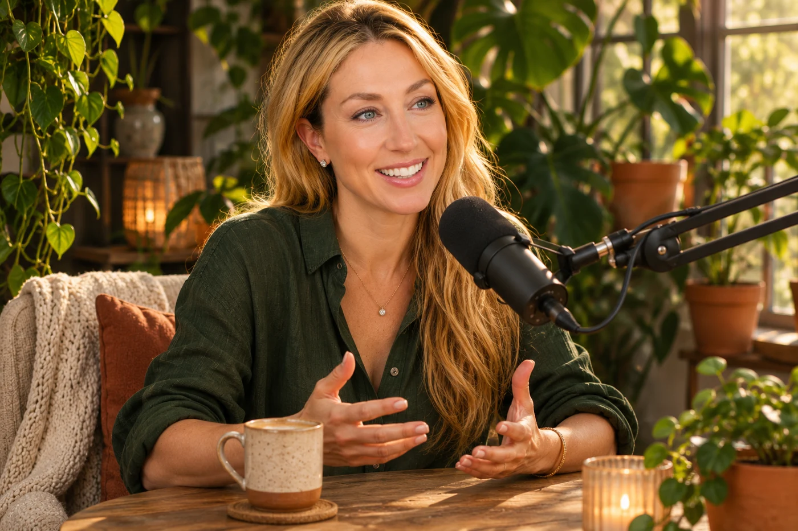
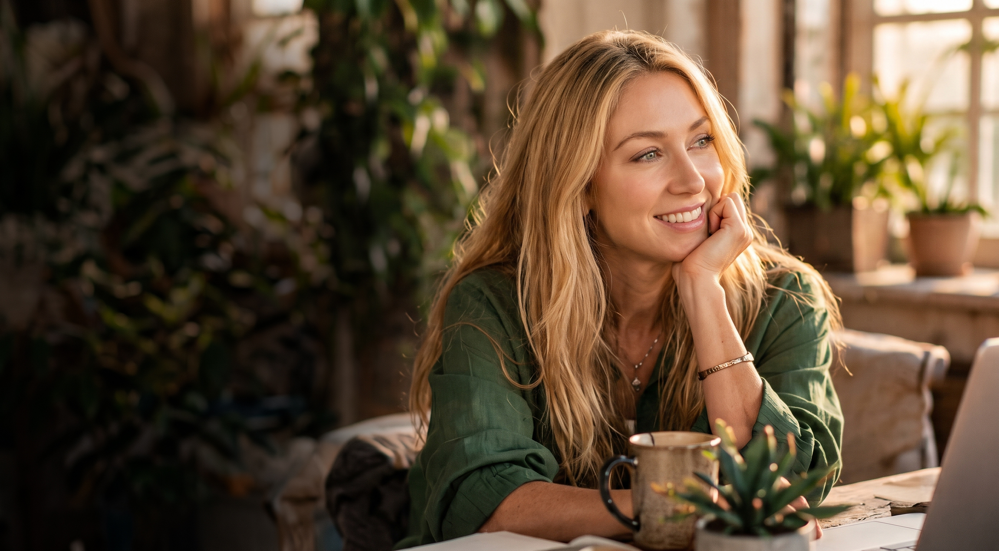
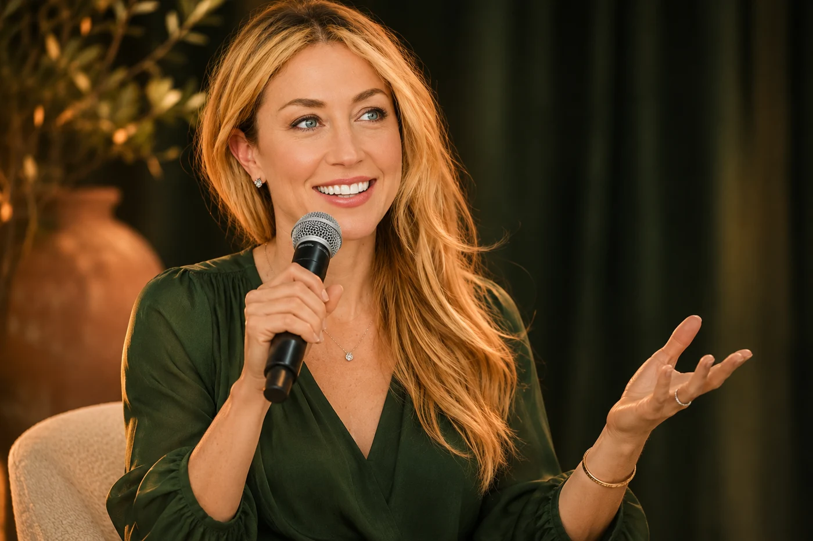
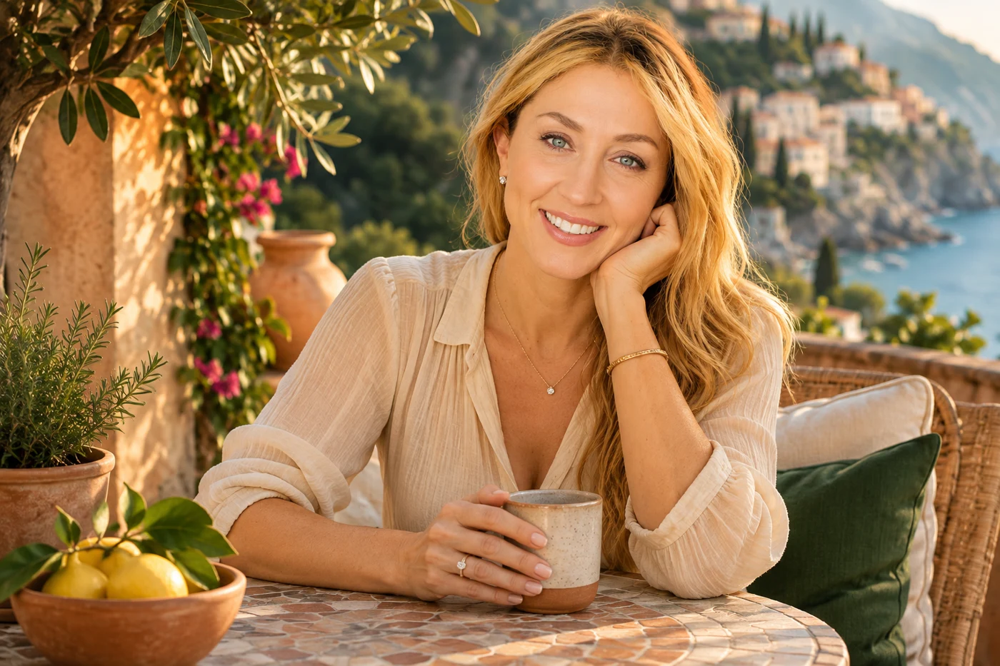
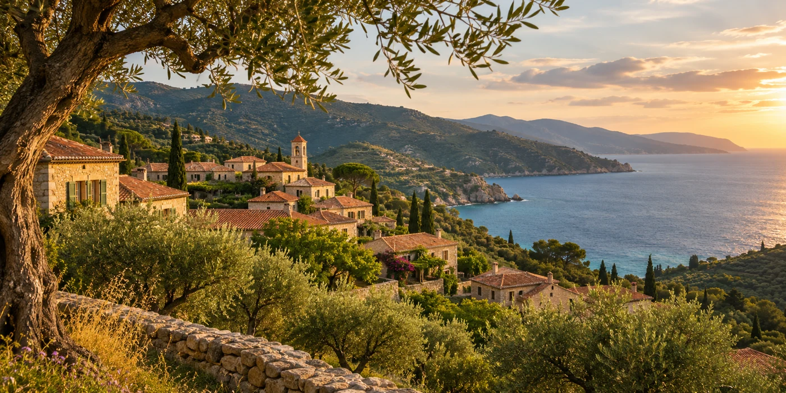

Stories & Media
Stories and real conversations that connect us, invite new perspectives, and bring us a little closer.
Explore
Storyteller.
Researcher.
Creator.
Future-forward. Human-centered.
Stories, research, and conversations
at the intersection of people, technology,
culture, and what it means to be human.

Stories and real conversations that connect us, invite new perspectives, and bring us a little closer.
ExploreExploring the human impact of technology, mental health, culture, and a world in motion.
Explore
Conversations about people, wellbeing, creativity, and a future that puts humanity at the center.
Explore WellSeekers
My story, the questions that move me, and why this work matters.
Learn more
Real people.
Real stories.
A more human world.
A little about me
I believe in the power of stories to connect us, challenge us, and create change — and in a future that puts people at the center.
About meStories that make room for connection.
Wellbeing, relationships, and being human.
Questions about a changing world.
Stay curious.
Stay connected.
Stay human.
Research & Ideas
My work brings together storytelling, research, and real-life conversations to explore how we live, love, connect, and change in a rapidly evolving world.
Let’s start a conversation